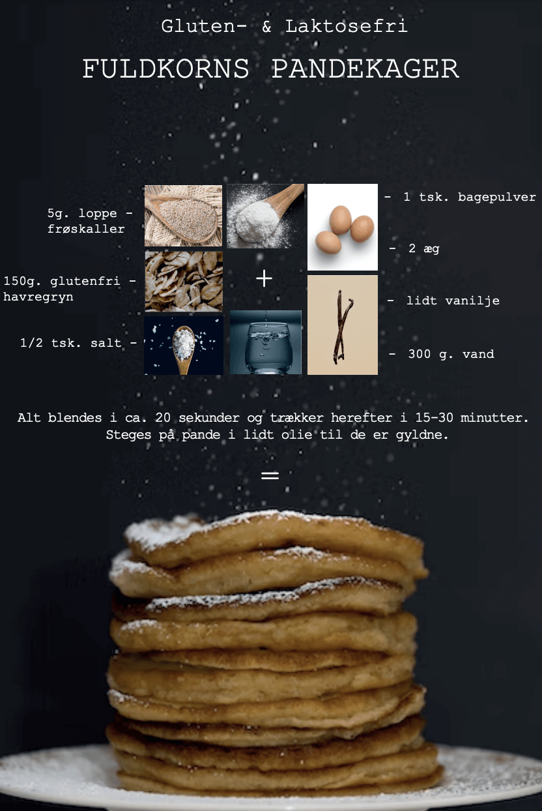

FULDKORNS PANDEKAGER
OPSKRIFT: FULDKORNS PANDEKAGER
Disse fuldkorns pandekager er nemme at lave og med meget få ingredienser. De er super gode altid at ha ved hånden. Så lav en ordentlig portion til køleskabet/fryseren, så har du til børnenes madpakke, 10 frugt, køreturen, til søndags brunchen og meget mere.
Opskriften er som følger:
150g. glutenfri havregryn
2 æg
300 g. mælk (evt. vand)
1/2 tsk. salt
1 tsk. bagepulver
5 g. loppefrøskaller (HUSK)
Evt. lidt vanilje
Alt blendes i ca. 20 sekunder og trækker herefter i 15-30 minutter. Steges på pande i lidt oliven- olie til de er gyldne. De er også super lækre at servere med lidt sirup og frisk frugt når de er lune.
Velbekomme.
Kærlig hilsen
FOR EMMA
